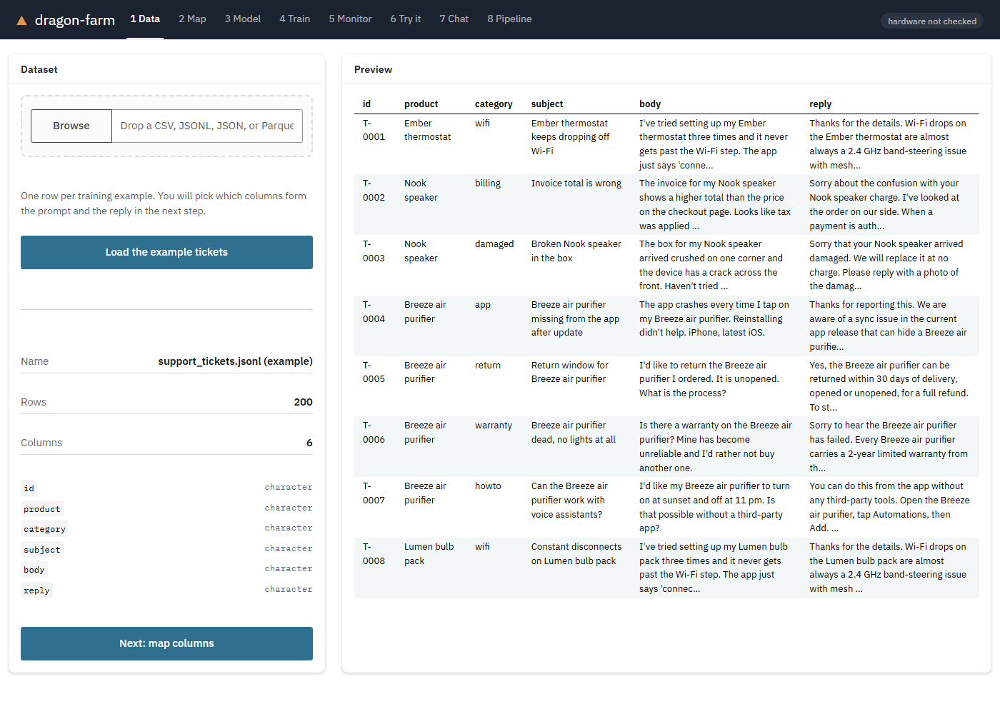
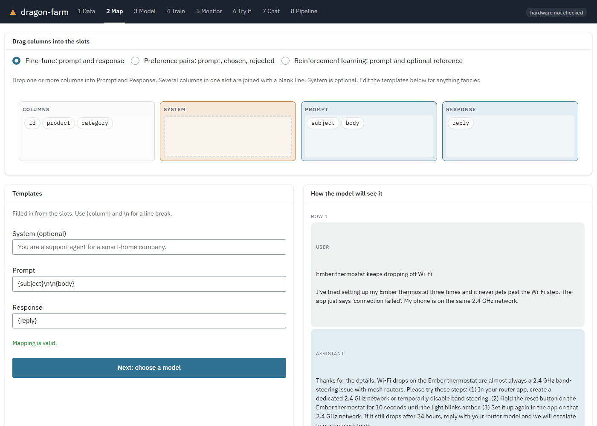
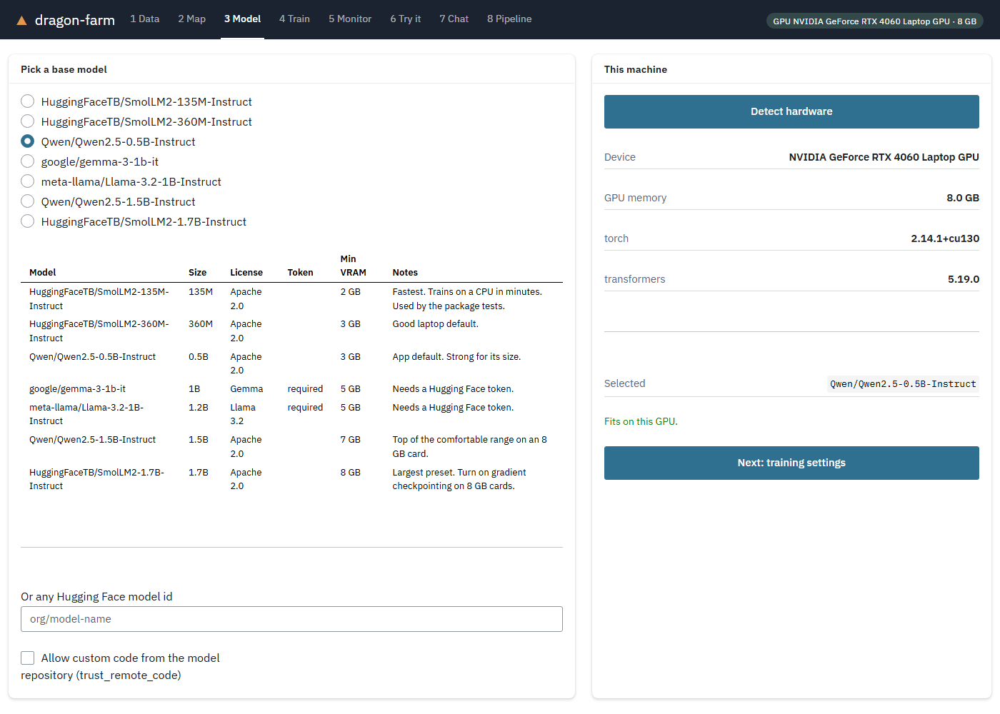
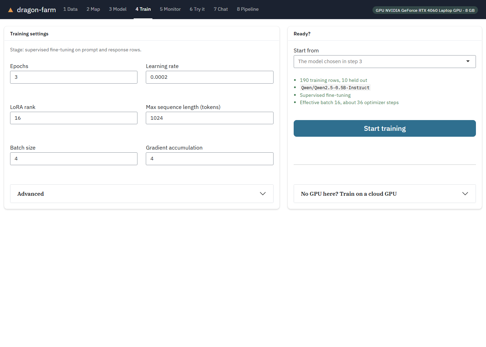
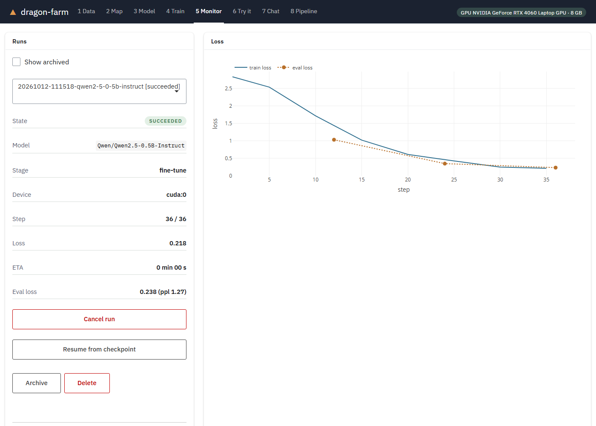
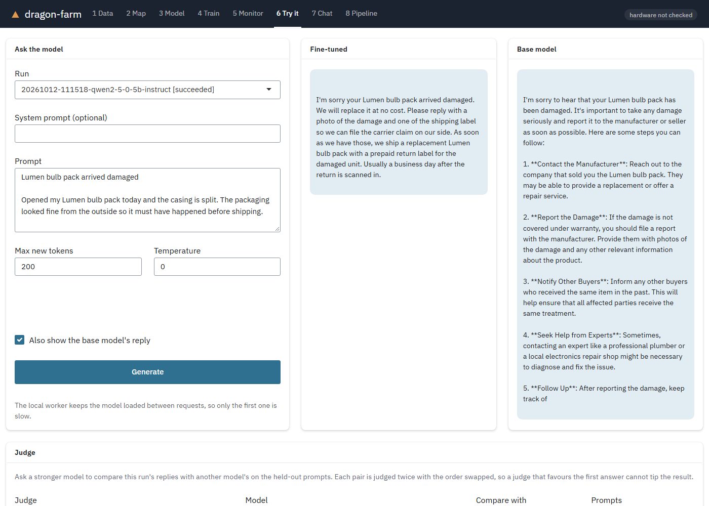

R package · on CRAN · MIT licensed
Fine-tune a language model
from R. In minutes.
Drop in a table, drag two columns into place, press Train. dragonfarm teaches a small model your format and your domain, on your own GPU or a free cloud one.
install.packages("dragonfarm")






Same model, same ticket
Teach it your house style.
A 0.5B-parameter model, before and after training on 190 example support tickets. This ticket was not in the training data. It is the median of the 10 held-out tickets by word overlap with the reference reply, and both replies are at temperature 0.
The example tickets are synthetic and built from templates, so this shows a model picking up a house style and policy, not open-ended reliability. Use your own data and check the output before relying on it.
Three ways in
Start where you’re comfortable.
Everything the app does is also an R function, and every run is a plain folder of files you can inspect.
Five lines
Map two columns, train, generate.
library(dragonfarm)
run <- dragon_dataset(dragon_example_data()) |>
dragon_map(prompt = "{subject}\n\n{body}",
response = "reply") |>
dragon_train("Qwen/Qwen2.5-0.5B-Instruct",
wait = TRUE)
dragon_generate(run,
"My thermostat keeps dropping off Wi-Fi.")Drag and drop
Six numbered steps, from loading a table to comparing against the base model. No code needed.
library(dragonfarm)
dragon_app()No GPU? No problem.
Send the run to a free Colab or Kaggle GPU and bring the adapter home. Colab trains the example in about four minutes.
run <- dragon_bundle(tickets,
"Qwen/Qwen2.5-0.5B-Instruct")
dragon_remote(run, "colab")
dragon_import(run, "results.zip")Go further
When one pass isn’t enough.
Preference tuning, reinforcement learning with rewards you can check, judges, chat, and publishing to the Hugging Face Hub are all in the box.
Your first fine-tune is ten minutes away.
Install the package, run dragon_check(), and open the app. The first run sets up Python for you.
install.packages("dragonfarm")